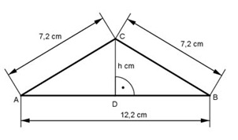

Pythagoras Aufgabe 18 Berechnen Sie die Höhe h in cm und die Fläche A des Dreiecks in cm2.

Im gleichschenkligen Dreieck halbiert die Höhe die Grundseite. AB 12,2 cm AD = ---- = --------- = 6,1 cm 2 2 Satz von Pythagoras im Dreieck ADC: AC2 = AD2 + h2 | -AD2 h2 = AC2 - AD2 h2 = 7,22 cm2 - 6,12 cm2 = 14,6 cm2 |√ h = = 3,8 cm g * h 12,2 cm * 3,8 cm A = -------- = -------------------- = 23,3 cm2 2 2